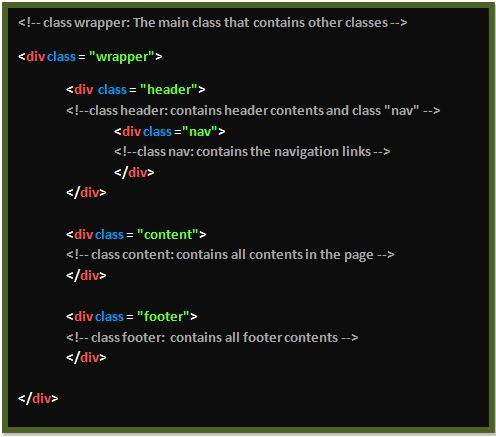
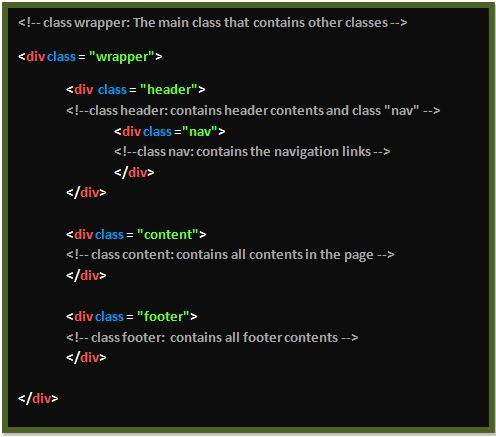

The general structure of each page in this website is as show below:

Some important CSS selectors/id's were used in the development of this website.
The chart below briefly explains on the important selectors/id's used.
Code
Function
.classname
The .classname selector was used to provide same styles and feature
to multiple pages in this website for eg .header was used to provide
the same header style in all web pages (home,past,future and comments).
#idname
The #id selector was used to style elements with specific ids.
For example #comments-text was used to provide specific color to my h1 text
and the same to contents text.
span.name
The span.name selector is used to group inline-elements in the webpage.
For eg In this website, span.imp-words was used in the homepage to highlight
or differentiate the simportant words by giving them a bluish color.
a:link
The a:link selector was used to provide specific style to the normal
and unvisited links in this website.
a:visited
The a:visited selector was used to provide specific style to the visited links.
a:hover
The a:hover was used to provide specific styles to the links(buttons) when the
user hovers the mouse over it.
Aesthetics
This is a simple designed website that is made for my web systems assignment.
It has all features and styles that would attract both aged and young people, especially
today's young generation.
The colourscheme chosen is a combination of light neon colors on the
darkbackground. The chosen colors are among the famous colours liked by most
people which will attract more users. This website contains a user friendly design
that has been achieved by the usage of attractive colours on different pages eg pink,
purple, yellow and green.
The navigation bar at the top of the page and the center of the header class makes use
of the active and hover selectors. The link buttons are initially given different colors such as
pink, purple, yellow and green. When the mouse hovers on the link-buttons the text within
the button, get underlined and when the user presses a button, then the current page's link-button changes
it's colour to blue.
To avoid the scrolling back up again for long pages like (Past and Comments page), a link
to the top of the page is made in the footer section named "Top". This will make it easy for the users
to scroll back to the top with a click after reaching the end of the page.
Accessibility
All images in this website have been given alt attribute, therefore the users who cannot
see or are colorblind , can get alternative information in the place of the image.
On each page of this website, a viewport metatag has been configured with width=device-width.
This allows adjustment in viewing the website in any screen size of the device it is being viewed on.
This means the website can be viewed on a small screen like a mobile phone screen or normal laptop screen,
as well as the large computer monitor screens.
This site has been tested in different browsers like Internet explorer, Mozilla Firefox and Google Chrome.
It is great that it displayed right for all the browsers it was tested on.
Technicalities
The general structure of each page in this website is as show below:
Some important CSS selectors/id's were used in the development of this website.
The chart below briefly explains on the important selectors/id's used.
multiple pages in this website for eg .header was used to provide
the same header style in all web pages (home,past,future and comments).
#comments-text was used to provide specific color to my h1 text
and the same to contents text.
In this website, span.imp-words was used in the homepage to highlight
or differentiate the simportant words by giving them a bluish color.
links in this website.
hovers the mouse over it.
Aesthetics
This is a simple designed website that is made for my web systems assignment. It has all features and styles that would attract both aged and young people, especially today's young generation. The colourscheme chosen is a combination of light neon colors on the darkbackground. The chosen colors are among the famous colours liked by most people which will attract more users. This website contains a user friendly design that has been achieved by the usage of attractive colours on different pages eg pink, purple, yellow and green.
The navigation bar at the top of the page and the center of the header class makes use of the active and hover selectors. The link buttons are initially given different colors such as pink, purple, yellow and green. When the mouse hovers on the link-buttons the text within the button, get underlined and when the user presses a button, then the current page's link-button changes it's colour to blue.
To avoid the scrolling back up again for long pages like (Past and Comments page), a link to the top of the page is made in the footer section named "Top". This will make it easy for the users to scroll back to the top with a click after reaching the end of the page.
Accessibility
All images in this website have been given alt attribute, therefore the users who cannot see or are colorblind , can get alternative information in the place of the image.
On each page of this website, a viewport metatag has been configured with width=device-width. This allows adjustment in viewing the website in any screen size of the device it is being viewed on. This means the website can be viewed on a small screen like a mobile phone screen or normal laptop screen, as well as the large computer monitor screens.
This site has been tested in different browsers like Internet explorer, Mozilla Firefox and Google Chrome. It is great that it displayed right for all the browsers it was tested on.